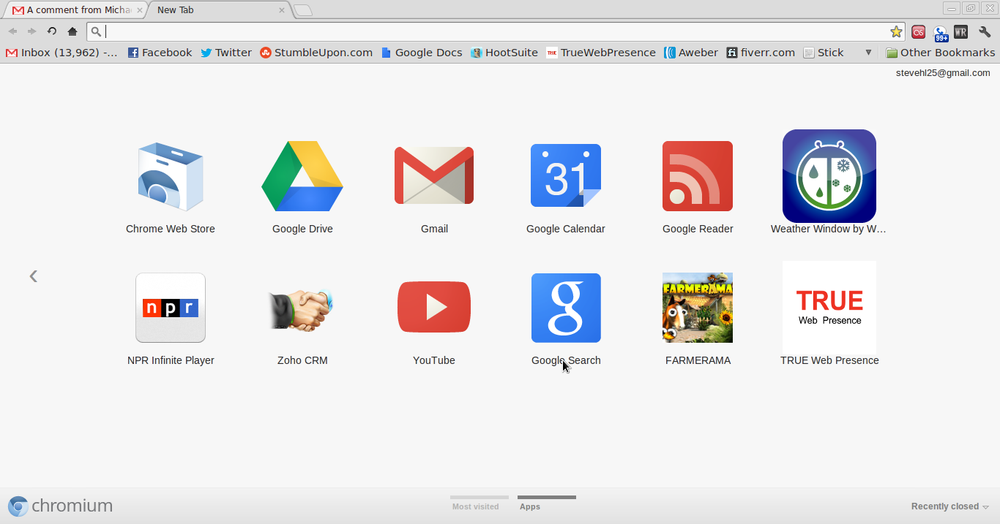
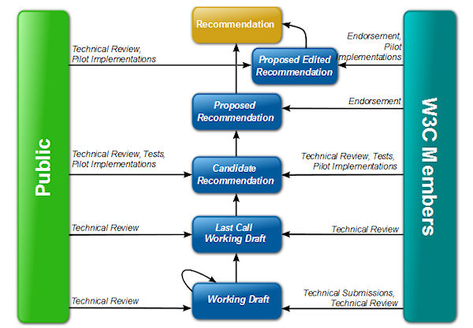
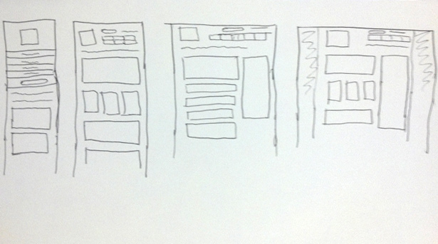

HTML 5
Contexte et perspectives
Créé par Jean-Charles Verdié @jcverdie et Sébastien Godard @sebgodard
Agenda
- Contexte de la normalisation de HTML 5
- Les groupes de travail, de test
- Etat du marché : le Web aujourd'hui
- Pourquoi une Web UI ?
- Outils
- Frameworks
- Stratégies
- Les domaines clés pour l'avenir sont dans HTML5
- Responsive Web Design
- Indie UI...
- Natif vs Web
Le Web...
Ce n'est plus ça...

Contexte et normalisation
- World Wide Web Consortium
- WhatWG
- HTML5 : une longue (lente ?) évolution depuis la toile hypertexte jusqu'à la toile hypermedia
Quelques données...
- 85% des mobiles en 2011 disposent d'un browser web
- Mobile ?
- ebooks
- tablettes
- imprimantes
- télévisions
- voitures...
Donc non, ce n'est vraiment plus ça....
...mais plutôt ça
Une application web aujourd'hui c'est...
- Medias
- Géolocalisation
- Social
- Offline
- Présentation
- Games !!!
Processus
- Groupes de travail (WG)
- Task Forces (TF)
- Editeurs
- Recommendations
- Standards officiels
Un bon schéma...
Groupes de travail
- eBooks
- TV
- Web Applications
- Semantic Web
- Open Web Platform
- Community Groups
Open Web Platform
- Ressources & Documentations
- Une tentative de rendre le web cohérent et mieux développé
www.webplatform.org
Community Groups
- Un processus plus léger
- Animé par le W3C, mais gratuit
- Unique opportunité de rencontrer ses pairs et de faire émerger de nouveaux besoins !
Les 10 raisons de développer son application en HTML5
- Ouvert et libre
- Économique
- Indépendance
- Référencement
- Partage
- Instantanéité
- Compatibilité
- Mise à jour
- Sécurité
- Accessibilité
Ouvert et libre
Une Web App en HTML5 offre les mêmes fonctionnalités qu’une application native mais dans format ouvert et libre de droit. Le Html5 sait tout faire et il est plus facile de trouver les compétences nécessaires pour développer dans ce langage plutôt que dans celui des applications natives, donc propriétaire.
Économique
Réduction du coût de développement. Une seule Web application est consultable par tous les terminaux quel que soit le constructeur (Apple, Samsung, Nokia…) et l’OS (Android, Windows, iOS…). Il n’y a pas besoin de développer une application par Smartphones.
Indépendance
La web App permet de se détacher du contrôle permanent des plateformes d’applications et de garder le contrôle de son business model. Les systèmes comme l’Appstore sont très rigides (grille tarifaires strictes, 30% sur toutes transactions…) et ne laissent aucune marge de manœuvre aux éditeurs.
Référencement
Le HTML5 donne la possibilité d’intégrer une sémantique enrichie dans les pages web et les Web Apps. Les principaux moteurs de recherche se sont mis d’accord afin de proposer un vocabulaire commun pour les microdonnées dans le but de faciliter leur adoption. Cela permet de mieux référencer ses contenus et de toucher plus d’utilisateurs.
Partage
Les Web Apps peuvent être partagées facilement par les éditeurs et entre les utilisateurs. Une Web App est avant tout un lien (url) qui peut facilement être partagé sur les réseaux sociaux, dans un email, dans un article de blog ou encore dans un QRcode. Ce dernier peut renvoyer directement vers la Web Apps et être ainsi une très bonne porte d’entrée pour les utilisateurs mobiles.
Instantanéité
Plus besoin d’installation. Je peux accéder à l’application directement et instantanément via mon navigateur préféré (Firefox, Chrome, Safari…)
Compatibilité
Les Web Apps sont compatibles avec tous les appareils mobiles (Smartphones, tablettes) ou fixes (Ordinateurs, Mac) quel que soit l’OS (iOS, Android, Windows…). J’ai accès à l’application en permanence et où que je sois. J’ai uniquement besoin d’une connexion internet et d’un navigateur web.
Mise à jour
J’utilise toujours la dernière version de l’application. Celle-ci est hébergée dans le « Cloud » par ses éditeurs. Je n’ai jamais besoin de la mettre à jour, j’accède toujours à la dernière version mise en place.
Sécurité
Toutes mes données son centralisées sur les serveurs de l’application (dans le cloud). Si je perds ou change de téléphone, je retrouve automatiquement mes données qui sont sauvegardées à un seul endroit.
Accessibilité
Je n’ai pas besoin du dernier Smartphone le plus puissant pour faire fonctionner l’application. Le HTML 5 est maintenant supporté par une large gamme de Smartphones dont les modèles d’entrée de gamme. De plus, les Web Apps sont généralement conçues et optimisées afin de demander peu de ressources au téléphone dans le but d’être accessible à tous et tout le temps.
HTML5 ~= HTML + CSS + JS
champ d'application
- Design / Dev / Optimisation
- Responsive Web Design
- Offline Application / Local Storage
- Realtime / Communication
- File / Hardware Access
- Semantics & Markup
- Graphics / Multimedia
- CSS3
- ...
- ...
Design / Dev / Optimisation
pensez "embarqué"
et simple
Un fichier HTML5 standard
<!DOCTYPE html>
<html>
<head>
<title>App title</title>
<meta name="viewport" content="width=device-width, initial-scale=1.0">
<link href="css/App.css" rel="stylesheet" media="screen">
<script src="App.js/"></script>
</head>
<body>
<h1>Hello, world!</h1>
</body>
</html>
Le header HTML5 permet de faire plusieurs réglages de votre apllication lors de son chargement.
meta
- Taille de l'application lors du chargement (viewport)
- Activation/Désactivation de fonctionalitées (Zomm, OriginScale, mobile-web-app-capable ...)
- Icone/Image sur le bureau (apple-touch-icon)
- Aspect du navigateur (mobile-web-app-status-bar-style)
media
- Utilisation des Media Queries : W3C
- seuls les CSS utilent pour le devices sont chargés dans le navigateur
- les CSS sont optimisés, ils ne contiennent que le code nécessaire et sont le plus légé possible.
script
- Comme pour le CSS, le code doit être le plus légé possible
- La javascript se compresse très bien (obfuscation). Tous les scripts javascript doivent utiliser cette technique
développement CSS
Utilisation de Toolkit : Sass, less ...
Pour générer du CSS optimisé :
@base: #f938ab;
.box-shadow(@style, @c) when (iscolor(@c)) {
box-shadow: @style @c;
-webkit-box-shadow: @style @c;
-moz-box-shadow: @style @c;
}
.box-shadow(@style, @alpha: 50%) when (isnumber(@alpha)) {
.box-shadow(@style, rgba(0, 0, 0, @alpha));
}
.box {
color: saturate(@base, 5%);
border-color: lighten(@base, 30%);
div { .box-shadow(0 0 5px, 30%) }
}
.box{color:#fe33ac;border-color:#fdcdea}.box div{box-shadow:0 0 5px rgba(0,0,0,0.3);-webkit-box-shadow:0 0 5px rgba(0,0,0,0.3);-moz-box-shadow:0 0 5px rgba(0,0,0,0.3)}
développement javascript
Si vous avez absolument besoin de libraries javascript externes (jQuery, Bootstrap), vous pouvez les ajouters.
Pensez à ne pas en ajouters trop en isolant bien vos besoin
Utilisez les version "obfuscated" (.min.css)
développement javascript
Pour ajouter votre propre code javascipt (controler), pensez aussi à générer une version "obfuscated"
Vous pouvez utilisez différents toolkits : Closure compiler, yuicompressor, jscrambler, AngularJS, Mobile GWT
Gain de temps de chargements et d'execution
Responsive Web Design
Un visuel est souvent plus parlant qu'un long discours
Media Queries
Responsive Web Design Using CSS3 Media Queries
<link rel="stylesheet" href="css/default.css">
<!-- Apple iPhone 4 -->
<link rel="stylesheet" media="screen and (device-width: 960px) and (device-height: 640px)" href="css/iphone4-style.css" />
<!-- Apple iPad -->
<link rel="stylesheet" media="screen and (orientation: landscape) and (resolution: 132ppi)" href="css/ipad-landscape-900px-width.css" />
<link rel="stylesheet" href="css/theme.css">
Résolution
{kind=link}
{kind=link}
Mockups
Une WebApp, c'est souvent ça au départ ;)
Design
Les bonnes pratiques des applications Web mobiles
HTML5 Rocks
Un petit tour chez Lea
WebGL
WebGL
Optimisation
Why Moving Elements With Translate() Is Better Than Pos:abs Top/left
Exemples
File System
Animation
Boutons
Border Images
FontFace / Typo
Cool Design
Vertical Slides
Slides can be nested inside of other slides, try pressing down.
Basement Level 1
Press down or up to navigate.
Basement Level 2
Cornify

Basement Level 3
That's it, time to go back up.
Point of View
Press ESC to enter the slide overview. Hold down alt and click on any element to zoom in on it using zoom.js. Alt + click anywhere to zoom back out.
rvl.io
If you don't like writing slides in HTML you can use the online editor rvl.io.
Works in Mobile Safari
Try it out! You can swipe through the slides and pinch your way to the overview.
Marvelous Unordered List
- No order here
- Or here
- Or here
- Or here
Fantastic Ordered List
- One is smaller than...
- Two is smaller than...
- Three!
Transition Styles
You can select from different transitions, like:
Cube -
Page -
Concave -
Zoom -
Linear -
Fade -
None -
Default
Themes
Reveal.js comes with a few themes built in:
Sky -
Beige -
Simple -
Serif -
Night -
Default
* Theme demos are loaded after the presentation which leads to flicker. In production you should load your theme in the <head> using a <link>.
Global State
Set data-state="something" on a slide and "something"
will be added as a class to the document element when the slide is open. This lets you
apply broader style changes, like switching the background.
"blackout"
"soothe"
Custom Events
Additionally custom events can be triggered on a per slide basis by binding to the data-state name.
Reveal.addEventListener( 'customevent', function() {
console.log( '"customevent" has fired' );
} );
Clever Quotes
These guys come in two forms, inline:
The nice thing about standards is that there are so many to choose from
and block:
For years there has been a theory that millions of monkeys typing at random on millions of typewriters would reproduce the entire works of Shakespeare. The Internet has proven this theory to be untrue.
Pretty Code
function linkify( selector ) {
if( supports3DTransforms ) {
var nodes = document.querySelectorAll( selector );
for( var i = 0, len = nodes.length; i < len; i++ ) {
var node = nodes[i];
if( !node.className ) ) {
node.className += ' roll';
}
};
}
}
Courtesy of highlight.js.
Intergalactic Interconnections
You can link between slides internally, like this.
Fragmented Views
Hit the next arrow...
... to step through ...
any type- of view
- fragments
Fragment Styles
There's a few styles of fragments, like:
grow
shrink
roll-in
fade-out
highlight-red
highlight-green
highlight-blue
Spectacular image!

Export to PDF
Presentations can be exported to PDF, below is an example that's been uploaded to SlideShare.
Take a Moment
Press b or period on your keyboard to enter the 'paused' mode. This mode is helpful when you want to take distracting slides off the screen during a presentation.
Stellar Links
It's free
reveal.js and rvl.io are entirely free but if you'd like to support the projects you can donate below. Donations will go towards hosting and domain costs.